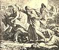

|
|
|
1 Kings 18
|
|
| 18:1
And it came to pass after many days, that the word of the LORD came to
Elijah in the third year, saying, Go, shew thyself unto Ahab; and I will
send rain upon the earth. |
|
| 18:2
And Elijah went to shew himself unto Ahab. And there was a sore famine in
Samaria. |
|
| 18:3
And Ahab called Obadiah, which was the governor of his house. (Now Obadiah
feared the LORD greatly: |
|
| 18:4
For it was so, when Jezebel cut off the prophets of the LORD, that Obadiah
took an hundred prophets, and hid them by fifty in a cave, and fed them with
bread and water.) |
|
| 18:5
And Ahab said unto Obadiah, Go into the land, unto all fountains of water,
and unto all brooks: peradventure we may find grass to save the horses and
mules alive, that we lose not all the beasts. |
|
| 18:6
So they divided the land between them to pass throughout it: Ahab went one
way by himself, and Obadiah went another way by himself. |
|
| 18:7
And as Obadiah was in the way, behold, Elijah met him: and he knew him,
and fell on his face, and said, Art thou that my lord Elijah? |
 (18:7) "He ... fell on his face."
(FOF) (18:7) "He ... fell on his face."
(FOF)
|
| 18:8
And he answered him, I am: go, tell thy lord, Behold, Elijah is here. |
|
| 18:9
And he said, What have I sinned, that thou wouldest deliver thy servant
into the hand of Ahab, to slay me? |
|
| 18:10
As the LORD thy God liveth, there is no nation or kingdom, whither my lord
hath not sent to seek thee: and when they said, He is not there; he took an
oath of the kingdom and nation, that they found thee not. |
|
| 18:11
And now thou sayest, Go, tell thy lord, Behold, Elijah is here. |
|
| 18:12
And it shall come to pass, as soon as I am gone from thee, that the Spirit
of the LORD shall carry thee whither I know not; and so when I come and tell
Ahab, and he cannot find thee, he shall slay me: but I thy servant fear the
LORD from my youth. |
|
| 18:13
Was it not told my lord what I did when Jezebel slew the prophets of the
LORD, how I hid an hundred men of the LORD's prophets by fifty in a cave,
and fed them with bread and water? |
|
| 18:14
And now thou sayest, Go, tell thy lord, Behold, Elijah is here: and he
shall slay me. |
|
| 18:15
And Elijah said, As the LORD of hosts liveth, before whom I stand, I will
surely shew myself unto him to day. |
|
| 18:16
So Obadiah went to meet Ahab, and told him: and Ahab went to meet Elijah. |
|
| 18:17
And it came to pass, when Ahab saw Elijah, that Ahab said unto him, Art
thou he that troubleth Israel? |
|
| 18:18
And he answered, I have not troubled Israel; but thou, and thy father's
house, in that ye have forsaken the commandments of the LORD, and thou hast
followed Baalim. |
|
| 18:19
Now therefore send, and gather to me all Israel unto mount Carmel, and the
prophets of Baal four hundred and fifty, and the prophets of the groves four
hundred, which eat at Jezebel's table. |
|
| 18:20
So Ahab sent unto all the children of Israel, and gathered the prophets
together unto mount Carmel. |
|
| 18:21
And Elijah came unto all the people, and said, How long halt ye between
two opinions? if the LORD be God, follow him: but if Baal, then follow him.
And the people answered him not a word. |
|
| 18:22
Then said Elijah unto the people, I, even I only, remain a prophet of the
LORD; but Baal's prophets are four hundred and fifty men. |


 (18:22-40) (18:22-40)
"Baal's prophets are four hundred and fifty men. ...
Elijah said unto them, Take the prophets of Baal; let not one
of them escape. And they took them: and Elijah brought them down to the brook Kishon, and slew them there."
God's 93rd Killing
Elijah kills the prophets of Baal
(Julius Schnorr von Carolsfelf, 1851-60)
|
| 18:23
Let them therefore give us two bullocks; and let them choose one bullock
for themselves, and cut it in pieces, and lay it on wood, and put no fire
under: and I will dress the other bullock, and lay it on wood, and put no
fire under:
|
| 18:24
And call ye on the name of your gods, and I will call on the name of the
LORD: and the God that answereth by fire, let him be God. And all the people
answered and said, It is well spoken.
|
| 18:25
And Elijah said unto the prophets of Baal, Choose you one bullock for
yourselves, and dress it first; for ye are many; and call on the name of
your gods, but put no fire under.
|
| 18:26
And they took the bullock which was given them, and they dressed it, and
called on the name of Baal from morning even until noon, saying, O Baal,
hear us. But there was no voice, nor any that answered. And they leaped upon
the altar which was made. |
|
| 18:27
And it came to pass at noon, that Elijah mocked them, and said, Cry aloud:
for he is a god; either he is talking, or he is pursuing, or he is in a
journey, or peradventure he sleepeth, and must be awaked. |
|
| 18:28
And they cried aloud, and cut themselves after their manner with knives
and lancets, till the blood gushed out upon them. |
|
| 18:29
And it came to pass, when midday was past, and they prophesied until the
time of the offering of the evening sacrifice, that there was neither voice,
nor any to answer, nor any that regarded. |
|
| 18:30
And Elijah said unto all the people, Come near unto me. And all the people
came near unto him. And he repaired the altar of the LORD that was broken
down. |
|
| 18:31
And Elijah took twelve stones, according to the number of the tribes of
the sons of Jacob, unto whom the word of the LORD came, saying, Israel shall
be thy name: |
|
| 18:32
And with the stones he built an altar in the name of the LORD: and he made
a trench about the altar, as great as would contain two measures of seed. |
|
| 18:33
And he put the wood in order, and cut the bullock in pieces, and laid him
on the wood, and said, Fill four barrels with water, and pour it on the
burnt sacrifice, and on the wood. |
|
| 18:34
And he said, Do it the second time. And they did it the second time. And
he said, Do it the third time. And they did it the third time. |
|
| 18:35
And the water ran round about the altar; and he filled the trench also
with water. |
|
| 18:36
And it came to pass at the time of the offering of the evening sacrifice,
that Elijah the prophet came near, and said, LORD God of Abraham, Isaac, and
of Israel, let it be known this day that thou art God in Israel, and that I
am thy servant, and that I have done all these things at thy word. |
 (18:36) (18:36)
"Hear me, O Lord, hear me, that this people may know that thou art the Lord."
Is it OK to test God?
|
| 18:37 Hear me, O LORD, hear me, that this people may
know that thou art the LORD
God, and that thou hast turned their heart back again. |
|
| 18:38
Then the fire of the LORD fell, and consumed the burnt sacrifice, and the
wood, and the stones, and the dust, and licked up the water that was in the
trench. |
(18:38)
"The fire of the Lord fell, and consumed ... stones."
(18:39a)
"And when all the people saw it, they fell on their faces: and they said The Lord, he is the God;
the Lord, he is the God."
(FOF)
How many gods are there?
|
| 18:39
And when all the people saw it, they fell on their faces: and they said,
The LORD, he is the God; the LORD, he is the God.
|
| 18:40
And Elijah said unto
them, Take the prophets of Baal; let not one of them escape. And they took
them: and Elijah brought them down to the brook Kishon, and slew them there.
|
| 18:41
And Elijah said unto Ahab, Get thee up, eat and drink; for there is a
sound of abundance of rain.
|
| 18:42
So Ahab went up to eat and to drink. And Elijah went up to the top of
Carmel; and he cast himself down upon the earth, and put his face between
his knees, |
|
| 18:43
And said to his servant, Go up now, look toward the sea. And he went up,
and looked, and said, There is nothing. And he said, Go again seven times. |
|
| 18:44
And it came to pass at the seventh time, that he said, Behold, there
ariseth a little cloud out of the sea, like a man's hand. And he said, Go
up, say unto Ahab, Prepare thy chariot, and get thee down that the rain stop
thee not. |
(18:45-46) When the hand of the Lord comes on Elijah, he girded up his loins and ran to Jezreel, running so fast
that he arrived before Ahab who was on horseback!
(18:45) "Ahab rode, and went to Jezreel."
(18:46) "And the hand of the LORD was on Elijah; and he girded up
his loins, and ran before Ahab to the entrance of Jezreel."
|
| 18:45
And it came to pass in the mean while, that the heaven was black with
clouds and wind, and there was a great rain. And Ahab rode, and went to Jezreel.
|
| 18:46 And the hand of the LORD was on Elijah; and he girded up
his loins, and ran before Ahab to the entrance of Jezreel.
|
|


{kind=link}